Tudo, num relance
Navegue em grade, em mosaico ou numa linha do tempo. A barra lateral se preenche sozinha com formatos, tipos, temas e cores.
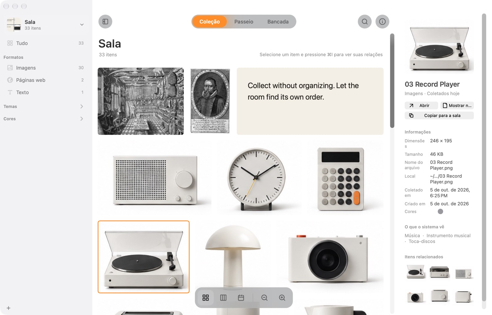
 Wunder.
Wunder.Um gabinete de curiosidades para o seu Mac. Guarde qualquer coisa, não organize nada.
Baixar para MacGrátis · 4 MB · macOS 14 ou posterior · Abrindo pela primeira vez?
1O que é
Imagens, links, citações, capturas de tela, arquivos. Pressione ⌘⇧C e pronto. Nenhuma pasta para escolher, nenhum nome para digitar.
O Wunder olha o que você guarda: as palavras numa imagem, o que aparece nela, as cores. Assim você encontra depois sem nunca ter arquivado.
2Por que é diferente
Pastas pedem que você decida onde algo vai antes de saber por que guardou. E as coisas acabam em lugar nenhum, ou em todo lugar.
O Wunder se organiza sozinho, por formato, tipo, tema e cor. E traz de volta o que é antigo, para o que você guardou não ficar só parado.
3Como funciona
Experimente aqui: pressione ⌘⇧C ou clique na tecla acima.
4O que você ganha
O que cabe
Da web, da câmera ou do disco. O texto dentro delas pode ser buscado.
JPEGPNGHEICWebPGIFTIFFRAWPSDToca no lugar quando você para o ponteiro em cima.
MOVMP4M4VAparece como uma onda que você pode tocar.
MP3M4AWAVAIFFFLACO texto de todas as páginas pode ser buscado.
PDFQualquer link, com uma cópia da página inteira para continuar lá mesmo se o site sumir. Reconhece livros, filmes, música, produtos e lugares.
URLPalavras copiadas viram cartões que lembram de onde vieram.
TXTRTFHTMLEscolha uma área ou uma janela, e pronto.
⌃⌘⇧CCom a própria pré-visualização, e abre no próprio app.
KeynoteFigmaZIP…Salas
Abra uma sala para cada projeto, cliente ou clima. Cada uma tem sua coleção, capa e pastas: pode vigiar as pastas que você escolher e trazer sozinha os arquivos novos, ou guardar cada arquivo numa pasta própria. As salas sincronizam entre seus Macs pelo iCloud.
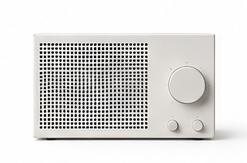
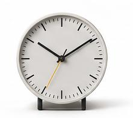
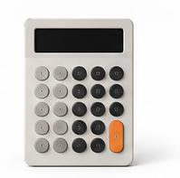
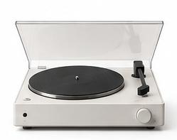
Atual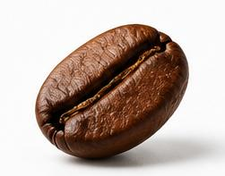
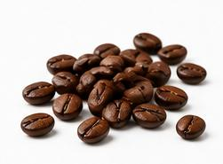

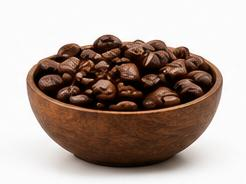

 iCloud
iCloud


 iCloud
iCloudBusca
Navegue em grade, em mosaico ou numa linha do tempo. A barra lateral se preenche sozinha com formatos, tipos, temas e cores.

Uma parede que desliza sozinha. “Para hoje” escolhe todo dia doze coisas que você tinha esquecido, e diz por quê.
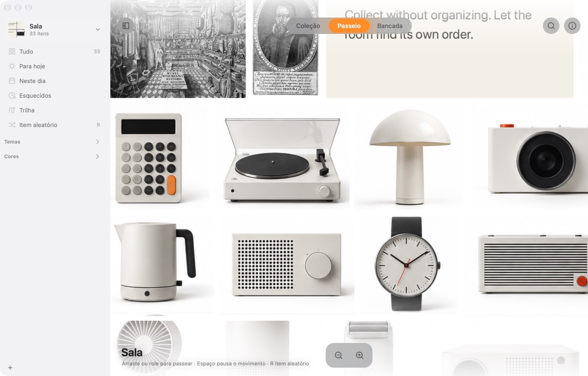
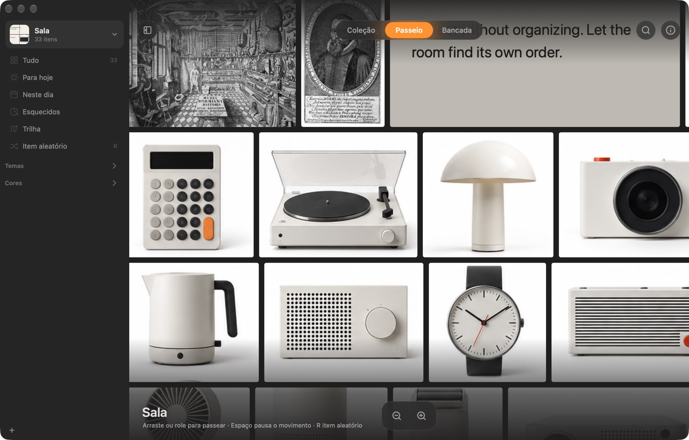
Agrupe por formato, tipo, tema ou cor. Mova as coisas, ligue-as com linhas e guarde três arranjos para voltar depois.
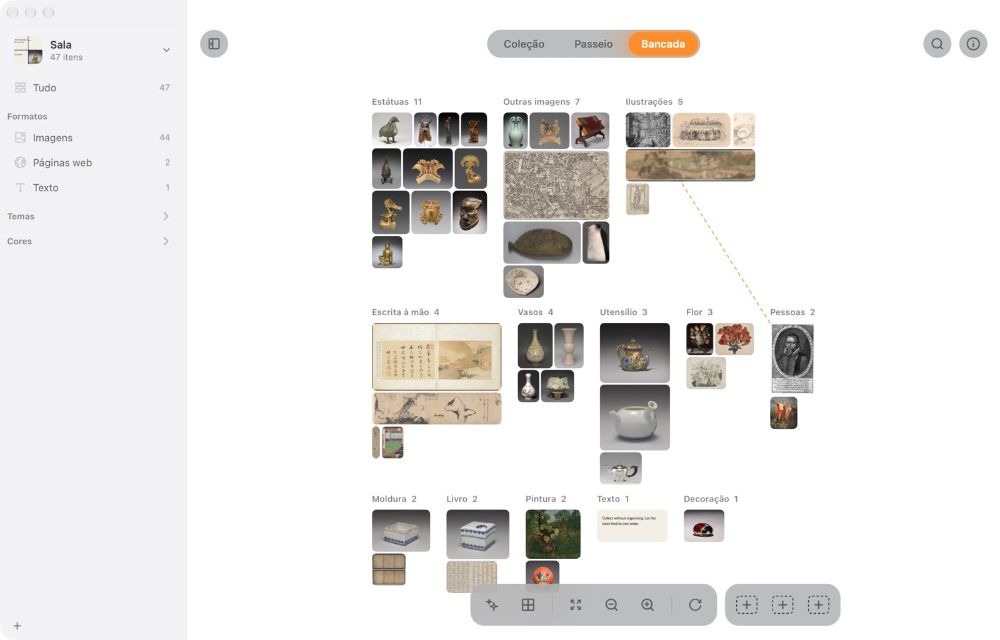
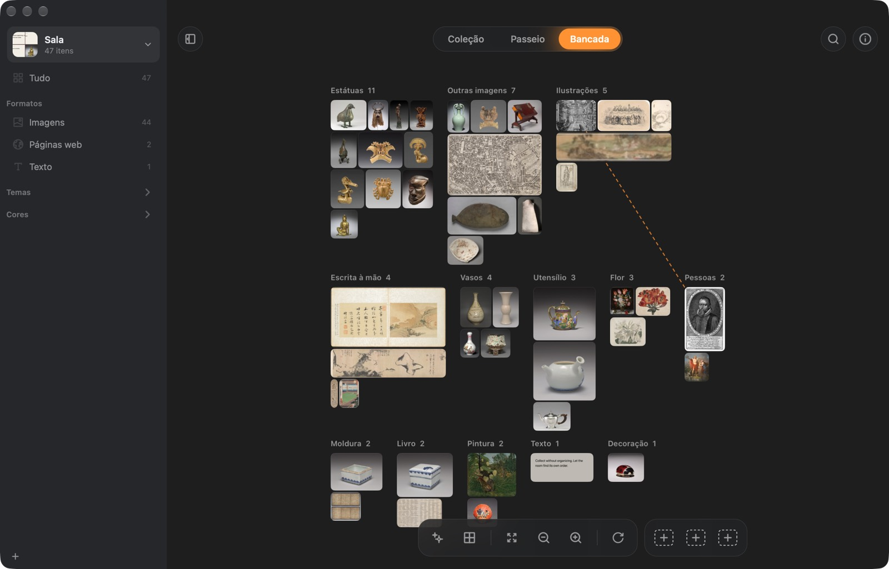
Bancada
Agrupe as mesmas coisas por formato, tipo, tema ou cor. Cada uma voa para o seu grupo, e dá para voltar quando quiser.
Guarde o que chama sua atenção
| Wunder | Atlas | Eagle | |
|---|---|---|---|
| Preço | Grátis | US$ 39 | US$ 29,95 |
| Organiza sozinho, sem pastas nem tags | ✓ | – | com regras |
| Encontra uma imagem pela descrição | ✓ | – | ✓ |
| Traz de volta o que é antigo todo dia | ✓ | – | – |
| Uma tela para organizar livremente | ✓ | ✓ | – |
| Tudo fica no seu Mac | ✓ | ✓ | ✓ |
| Também para Windows | – | – | ✓ |
Com base no site de cada app, outubro de 2026.
Um lugar no seu Mac para as coisas que você não quer perder, mas também não quer organizar. Ele guarda imagens, páginas web, textos e arquivos, entende o que são e ajuda você a encontrá-los de novo.
O Wunder ainda não foi notarizado pela Apple, então na primeira vez o macOS bloqueia. Abra Ajustes do Sistema → Privacidade e Segurança, role até o fim e clique em Abrir Mesmo Assim. Só é preciso fazer isso uma vez.
Ou, no Terminal: xattr -dr com.apple.quarantine /Applications/Wunder.app
Não. Ler o texto das imagens, reconhecer o que aparece, as cores, imagens parecidas e as perguntas são processados no seu Mac com as ferramentas da Apple. O Wunder só se conecta para ler as páginas que você guarda, baixar uma vez o modelo de busca por descrição (cerca de 106 MB, opcional) e verificar se há uma versão nova.
Não. Ele lembra onde estão e acompanha se você os mover. Se preferir manter cópias, uma sala pode guardar cada arquivo numa pasta própria.
Ative a sincronização de uma sala e ela vai para o iCloud Drive. Qualquer Mac com a sua Conta Apple pode abri-la. Se dois Macs mudarem ao mesmo tempo, as duas mudanças são mantidas.
Um Mac com macOS 14 Sonoma ou posterior. Fazer perguntas à coleção requer a Apple Intelligence (macOS 26).
Sim. O código está no GitHub.
Grátis para Mac. Sem conta, sem configuração.
Baixar para Mac